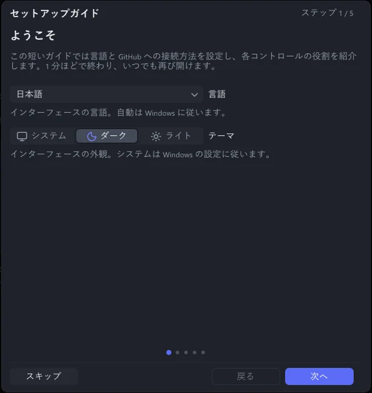
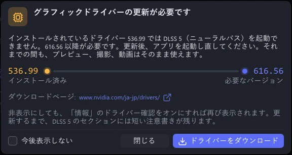

ガイド · ステップ 1 / 8
インストール
グラフィックカードに合うファイルをダウンロードして展開し、アプリを起動します。
必要なもの
- Windows 10（21H2 以降）または Windows 11、64 ビット。
- NVIDIA GeForce RTX カード（RTX 20、30、40、50 シリーズ）。なお、AMD Radeon RX 7000 / 9000 は Radeon 版 で使えます。
- ライブカメラを使う場合：VRChat（デスクトップでも VR でも可）。
ほかには何も要りません。DLSS 5 ランタイムはダウンロードに含まれていて、RTX 50 向けと RTX 40 / 30 / 20 向けの 2 つのビルドがあります。合うほうをアプリが自動で選びます。
ダウンロードと展開
ダウンロード を開き、お使いのカードに合うファイルを選びます。お使いのカードが GeForce なら
VRChatDLSS5Cam-win64.zipです。zip を右クリックして すべて展開 を選びます。展開先には、自分のフォルダー（たとえば ドキュメント）を選びます。
VRChatDLSS5Cam.exeの入った新しいフォルダーができます。VRChatDLSS5Cam.exeをダブルクリックします。アプリのアイコンが入った小さなカードが表示され、続いてウィンドウが開きます。
セットアップガイド
初めて起動すると、5 ページの短いセットアップガイドが開きます。
ようこそ：言語と見た目（システム、ダーク、ライト）。
GitHub へのアクセス：更新のためにアプリが GitHub に接続する方法。GitHub に直接接続 のままで構いません。GitHub が遅い、またはつながらない地域では ミラーサイト（最速を自動選択） を選びます。
プログラムの仕組み
各設定の役割
どこに何があるか：このガイド、ドキュメント、AI Q&A、検索ボックスの場所。ガイドを閉じると、これらの場所がしばらく光ります。
次へ で先に進み、スキップ で閉じます。あとでもう一度見るには、情報 → セットアップガイド を押します。


グラフィックドライバー
DLSS 5 には GeForce ドライバー 616.56 以降が必要です。アプリは起動のたびにドライバーを確認し、古い場合は次のように知らせます。


ドライバーをダウンロード をクリックします。ブラウザーで NVIDIA のダウンロードページが開きます。
お使いのカード向けの最新ドライバーをインストールします。
アプリを起動し直します。
通知が出なくなり、DLSS 5 ニューラルレンダリング に 動作中 と表示されます。
ドライバーが古くても、ほかの機能（表示、撮影、動画）はすべて使えます。起動しないのは DLSS 5 だけです。